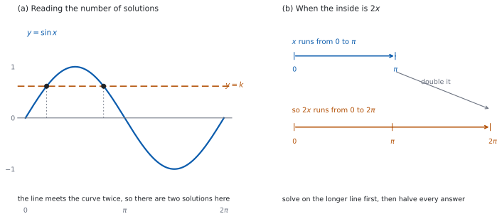

SL 3.8 — Solving trigonometric equations（三角方程式を解く）
- 区間が指定された三角方程式を、その区間の中ですべて解ける。
- \(\sin\)・\(\cos\) ではもう \(1\) つの解の出し方が、\(\tan\) ではくり返しの幅が言える。
- 中身が \(bx\) や \(b(x+c)\) のとき、中身の区間に直してから解ける。
- \(\sin\) や \(\cos\) の \(2\) 次式になる方程式を解ける。
- 両辺を割ってはいけない場面が分かる。
The idea
1. 区間が必ず指定されます
三角方程式には、ふつう解が無限にあります。\(\sin x = \dfrac{\sqrt{2}}{2}\) は \(\dfrac{\pi}{4}\) でも成り立ちますが、そこに \(2\pi\) を足しても、また足しても成り立ちます。
だから問題文は、必ず区間を指定します。「\(0 \le x \le 2\pi\)」「\(-\pi \le x \le 3\pi\)」のような形です。答えるのは、その区間の中の解だけです。
シラバスは、この項目について次のように述べています。
Not required: The general solution of trigonometric equations.
つまり、\(x = \dfrac{\pi}{6} + 2n\pi\) のような一般解の形は、SL では求められません。 区間の中の解を、\(1\) つずつ書き並べます。
2. もう \(1\) つの解
まず基本の解を \(1\) つ出します。\(k\) が正なら、正確な値の表（SL 3.5b）から直接読めます。\(k\) が負のときは、表から出るのは参照角（\(\lvert k \rvert\) に対応する鋭角）です。象限の符号から、その参照角がどの象限の角になるかを決めてから、基本の解にします（SL 3.5b）。
基本の解が決まったら、同じ値をとるもう \(1\) つの角を探します。
表 1 のとおりです。単位円で考えれば、どれも折り返しです（SL 3.5a）。
| 方程式 | 基本の解 \(\alpha\) | もう \(1\) つ | くり返しの幅 |
|---|---|---|---|
| \(\sin x = k\) | \(\alpha\) | \(\pi - \alpha\) | \(2\pi\) |
| \(\cos x = k\) | \(\alpha\) | \(-\alpha\)（または \(2\pi - \alpha\)） | \(2\pi\) |
| \(\tan x = k\) | \(\alpha\) | （\(\alpha + \pi\) がくり返しそのもの） | \(\pi\) |
表の \(\pi - \alpha\) や \(-\alpha\) が使えるのは、\(\alpha\) 自身が解になっているときだけです。参照角のまま入れないでください。
\(\tan\) だけは \(1\) 周期に \(1\) つです。\(\tan\) の period が \(\pi\) だからです（SL 3.7a）。
3. 区間の中をすべて拾う
\(2\) つ出したら、くり返しの幅を足したり引いたりして、区間の中に入るものをすべて集めます。
- 基本の解 \(\alpha\) を出す。\(\sin\)・\(\cos\) なら、もう \(1\) つの解も出す。
- それぞれに \(2\pi\)（\(\tan\) なら \(\pi\)）を足していく。区間を出たら止める。
- 同じように引いていく。区間を出たら止める。
- 小さい順に並べて答える。
グラフでも数えられます。 図 1 の (a) のように、\(y = \sin x\) と \(y = k\) をかいて、交点の数を見ます。数が合っているかの確かめに便利です。
\(\sin x = 1.5\) や \(\cos x = -2\) には解がありません。\(\sin\) と \(\cos\) の値は \(-1\) 以上 \(1\) 以下だからです（SL 3.7a）。
そこで止めて、「解なし」と書きます。 \(\tan\) にはこの制限がありません。
4. 中身が変わっているとき
\(\sin 2x = k\) のように中身が変わっているときは、中身をひとかたまりとして扱います。
- 中身の区間に直す。\(0 \le x \le \pi\) なら \(0 \le 2x \le 2\pi\) です。
- その区間で、中身の値をすべて求める。
- 最後に \(x\) にもどす（ここでは \(2\) で割る）。
図 1 の (b) を見てください。区間を広げ忘れると、解を半分しか拾えません。
\(b(x+c)\) の形でも同じです。\(0 \le x \le 2\pi\) で中身が \(2\left(x - \dfrac{\pi}{4}\right)\) なら、中身は \(-\dfrac{\pi}{2}\) から \(\dfrac{7\pi}{2}\) まで動きます。
5. \(2\) 次式になるとき
\(\sin x\) や \(\cos x\) の \(2\) 次式になることがあります。そのときは
- \(1\) 種類の比だけの式にする（SL 3.6 の \(\cos^{2}\theta + \sin^{2}\theta = 1\) を使います）。
- \(\sin x = s\) のように置きかえて、\(2\) 次方程式として解く（SL 2.7）。
- 出た値が \(-1\) 以上 \(1\) 以下か確かめる。 外れていたら、その値は捨てます。
- 残った値ごとに、第 2 節と第 3 節で \(x\) を出す。
捨てる作業を書き残してください。 「\(\sin x = 2\) は不適」と一言あると、確かめたことが伝わります。
6. \(\sin\) と \(\cos\) が混ざるとき
\(\sin 2x = \sin x\) のように \(2\) 倍角が混ざっているときは、\(2\) 倍角で開いてから因数分解します（SL 3.6）。
\[ \sin 2x = 2\sin x\cos x \]
を使うと、両辺に \(\sin x\) が出てきます。ここが要注意です。
\(\sin x = 0\) になる \(x\) があるので、\(\sin x\) で割るとその解が消えます。
移項して \(0\) にし、因数分解します。 \(2\sin x\cos x - \sin x = 0\) から \(\sin x(2\cos x - 1) = 0\) とすれば、\(2\) つの場合が両方残ります。
\(\cos x\) が共通因数になるときも同じです。割らずに、くくり出してください。
7. 答案の書き方
- 区間を書き写してから始めます。 中身が変わっているなら、中身の区間も書きます。
- 解はすべて、小さい順に書きます。
exactと言われたら \(\pi\) を残します。 小数にしません。- 捨てた候補も、理由をひとこと書きます。
TI-Nspire の Graphs 画面に、左辺と右辺を f1(x) と f2(x) として入れ、menu → Analyze Graph → Intersection で交点を出します。下限と上限を指定するので、指定された区間に合わせてください。
交点は \(1\) つずつ出ます。 区間の中に何個あるかは、グラフを見て自分で数えます。
TI-Nspire CX II に solve( はありません。 \(2\) 次式になるときは menu → Algebra → Polynomial Tools → Find Roots of Polynomial が使えます。
Paper 1 では使えません。 このページの例題と演習は、すべて手で解ける形にしてあります。

Why it works
なぜ、解が \(2\) つずつ出るのでしょうか。 \(\sin x = k\) を単位円で見ると、\(y\) 座標が \(k\) の点を探すことになります。\(-1 < k < 1\) なら、横に引いた線は円と \(2\) 点で交わります。
その \(2\) 点は \(y\) 軸について対称なので、角は \(\alpha\) と \(\pi - \alpha\) です（SL 3.5a）。\(\cos x = k\) なら \(x\) 軸について対称で、角は \(\alpha\) と \(-\alpha\) です。
\(k = \pm 1\) のときだけ、\(2\) 点が重なって \(1\) つになります。
なぜ、\(\tan\) は \(1\) 周期に \(1\) つなのでしょうか。 \(\tan x = k\) は、原点を通る傾き \(k\) の直線を考えることに当たります（SL 3.5a）。直線は単位円と \(2\) 点で交わりますが、その \(2\) 点は原点について対称で、角は \(\alpha\) と \(\alpha + \pi\) です。
\(\alpha + \pi\) は、\(\tan\) の period \(\pi\) を足しただけなので、「もう \(1\) つの解」ではなく「次のくり返し」です。だから \(\tan\) では、\(\pi\) ごとに \(1\) つずつ並びます。
なぜ、中身の区間を広げるのでしょうか。 \(x\) が長さ \(L\) の区間を動くとき、\(2x\) は長さ \(2L\) の区間を動きます。置換後の角が動く範囲が広がるので、もとの範囲だけで探すと解を落とします。
\(x\) の区間のまま中身を見ると、後半を見ないことになり、そのぶんの解を落とします。
解の個数が \(2\) 倍になるとはかぎりません。 \(0 \leq x \leq 2\pi\) で \(\sin x = 0\) の解は \(x = 0\)、\(\pi\)、\(2\pi\) の \(3\) つ、\(\sin 2x = 0\) の解は \(x = 0\)、\(\dfrac{\pi}{2}\)、\(\pi\)、\(\dfrac{3\pi}{2}\)、\(2\pi\) の \(5\) つです。端点を数えるかどうかで個数が変わります。 倍率で決めずに、変換後の範囲で一つずつ並べて、端点を確かめてください。
なぜ、共通因数で割ってはいけないのでしょうか。 割り算ができるのは、割る数が \(0\) でないときだけです。\(\sin x = 0\) となる \(x\) がある以上、\(\sin x\) で割った式はその \(x\) については何も言っていません。
もとの式で \(\sin x = 0\) を入れると、\(2\sin x\cos x = \sin x\) の両辺が \(0\) になって成り立ちます。割ると、この解が消えてしまいます。 因数分解なら、\(\sin x = 0\) の場合が「もう一方の因数」として残ります。
Worked examples
問題文は英語です。意味が理解できなかったら、問題文の下の「日本語訳」を開いてください。解説は日本語です。
例題も演習も、すべて電卓なしで解けます。 Paper 1 のつもりで解いてください。
例題 1 Consider the equation \(2\sin x = 1\).
(a) Show that \(\sin x = \dfrac{1}{2}\).
(b) Find all solutions in the interval \(0 \le x \le 2\pi\).
(c) Find all solutions in the interval \(0 \le x \le 4\pi\).
(d) Explain why the longer interval contains twice as many solutions.
日本語訳
方程式 \(2\sin x = 1\) を考えます。
(a) \(\sin x = \dfrac{1}{2}\) であることを示しなさい。
(b) 区間 \(0 \le x \le 2\pi\) における解をすべて求めなさい。
(c) 区間 \(0 \le x \le 4\pi\) における解をすべて求めなさい。
(d) 長いほうの区間に解が \(2\) 倍あるのはなぜかを説明しなさい。
(a) Show that なので、過程を書きます。 両辺を \(2\) で割ります。
\[ 2\sin x = 1 \ \Rightarrow \ \sin x = \frac{1}{2} \]
(b) 基本の解は \(\alpha = \dfrac{\pi}{6}\) です（SL 3.5b）。もう \(1\) つは \(\pi - \alpha\) です（表 1）。
\[ x = \frac{\pi}{6}, \qquad x = \pi - \frac{\pi}{6} = \frac{5\pi}{6} \]
どちらも区間の中なので、これで全部です。
(c) それぞれに \(2\pi\) を足します（第 3 節）。
\[ \frac{\pi}{6} + 2\pi = \frac{13\pi}{6}, \qquad \frac{5\pi}{6} + 2\pi = \frac{17\pi}{6} \]
\(\dfrac{17\pi}{6} < 4\pi\) なので、どちらも区間の中です。次はもう \(4\pi\) を超えます。
\[ x = \frac{\pi}{6},\ \frac{5\pi}{6},\ \frac{13\pi}{6},\ \frac{17\pi}{6} \]
(d) Explain why なので、英語で理由を書きます。
試験ではこう書く
The function \(\sin\) repeats every \(2\pi\), so the solutions of \(\sin x = \dfrac{1}{2}\) repeat with the same spacing. The interval \(0 \le x \le 4\pi\) is exactly two of these repeats, while \(0 \le x \le 2\pi\) is one. Each repeat contributes the same two solutions, so the longer interval contains twice as many.
（\(\sin\) は \(2\pi\) ごとにくり返すので、\(\sin x = \dfrac{1}{2}\) の解も同じ間隔でくり返す。区間 \(0 \le x \le 4\pi\) はそのくり返しちょうど \(2\) つぶんで、\(0 \le x \le 2\pi\) は \(1\) つぶんである。どのくり返しにも同じ \(2\) つの解が入るので、長いほうの区間には \(2\) 倍の解がある、という意味です。）
検算（(b) について）。 値を入れます。 \(\sin\dfrac{\pi}{6} = \dfrac{1}{2}\)、\(\sin\dfrac{5\pi}{6} = \dfrac{1}{2}\) ✓ どちらも \(2\sin x = 1\) をみたします。
検算（(b) について、個数）。 グラフで数えます。 \(y = \sin x\) と \(y = \dfrac{1}{2}\) は、\(0\) から \(2\pi\) で \(2\) 回交わります（図 1 の (a)）✓
検算（(c) について）。 範囲を見ます。 \(\dfrac{17\pi}{6} \approx 2.83\pi\) で \(4\pi\) より小さく、次の \(\dfrac{25\pi}{6} \approx 4.17\pi\) は超えます ✓ だから \(4\) つで全部です。
(a) \[2\sin x = 1 \ \Rightarrow \ \sin x = \frac{1}{2}\]
(b) \(\alpha = \dfrac{\pi}{6}\), and \(\pi - \alpha = \dfrac{5\pi}{6}\) \[x = \frac{\pi}{6}, \ \frac{5\pi}{6}\]
(c) add \(2\pi\) to each \[x = \frac{\pi}{6}, \ \frac{5\pi}{6}, \ \frac{13\pi}{6}, \ \frac{17\pi}{6}\]
(d) \(\sin\) repeats every \(2\pi\), and \(0 \le x \le 4\pi\) is two such repeats.
例題 2 Consider the equation \(2\sin^{2}x + 5\cos x + 1 = 0\).
(a) Show that \(2\cos^{2}x - 5\cos x - 3 = 0\).
(b) Find the possible values of \(\cos x\).
(c) Find all solutions in the interval \(0 \le x \le 4\pi\).
(d) Explain why one of the values found in part (b) gives no solutions.
日本語訳
方程式 \(2\sin^{2}x + 5\cos x + 1 = 0\) を考えます。
(a) \(2\cos^{2}x - 5\cos x - 3 = 0\) であることを示しなさい。
(b) \(\cos x\) として考えられる値を求めなさい。
(c) 区間 \(0 \le x \le 4\pi\) における解をすべて求めなさい。
(d) (b) で求めた値の \(1\) つが解を与えない理由を説明しなさい。
(a) Show that なので、過程を書きます。 \(\sin^{2}x = 1 - \cos^{2}x\) を使います（SL 3.6）。
\[ 2(1 - \cos^{2}x) + 5\cos x + 1 = 0 \]
\[ -2\cos^{2}x + 5\cos x + 3 = 0 \]
両辺に \(-1\) をかけます。
\[ 2\cos^{2}x - 5\cos x - 3 = 0 \]
(b) \(\cos x = c\) と置いて因数分解します（第 5 節）。
\[ 2c^{2} - 5c - 3 = (2c + 1)(c - 3) = 0 \]
\[ \cos x = -\frac{1}{2} \quad \text{または} \quad \cos x = 3 \]
\(\cos x = 3\) は不適です（(d) で理由を書きます）。
(c) \(\cos x = -\dfrac{1}{2}\) を解きます。基本の解は \(\alpha = \dfrac{2\pi}{3}\) で、もう \(1\) つは \(2\pi - \alpha = \dfrac{4\pi}{3}\) です（表 1）。
それぞれに \(2\pi\) を足します。
\[ \frac{2\pi}{3} + 2\pi = \frac{8\pi}{3}, \qquad \frac{4\pi}{3} + 2\pi = \frac{10\pi}{3} \]
\(\dfrac{10\pi}{3} < 4\pi\) なので、どれも区間の中です。
\[ x = \frac{2\pi}{3},\ \frac{4\pi}{3},\ \frac{8\pi}{3},\ \frac{10\pi}{3} \]
(d) Explain why なので、英語で理由を書きます。
試験ではこう書く
The value \(\cos x\) is the \(x\)-coordinate of a point on the unit circle, so it always satisfies \(-1 \le \cos x \le 1\). The second root of the quadratic is \(\cos x = 3\), and \(3 > 1\), so no angle has this cosine. That root is therefore rejected and contributes no solutions.
（\(\cos x\) は単位円上の点の \(x\) 座標なので、つねに \(-1 \le \cos x \le 1\) をみたす。\(2\) 次方程式のもう \(1\) つの根は \(\cos x = 3\) で、\(3 > 1\) だから、この余弦をもつ角はない。よってこの根は捨てられ、解を与えない、という意味です。）
検算（(a)(b) について）。 もとの式に戻します。 \(\cos x = -\dfrac{1}{2}\) なら \(\sin^{2}x = 1 - \dfrac{1}{4} = \dfrac{3}{4}\) です。もとの式に入れると \(2 \times \dfrac{3}{4} + 5 \times \left(-\dfrac{1}{2}\right) + 1 = \dfrac{3}{2} - \dfrac{5}{2} + 1 = 0\) ✓
検算（(b) について）。 展開して確かめます。 \((2c+1)(c-3) = 2c^{2} - 6c + c - 3 = 2c^{2} - 5c - 3\) ✓
検算（(c) について）。 個数で見ます。 \(\cos x = -\dfrac{1}{2}\) は \(1\) 周期に \(2\) つ、区間は \(2\) 周期ぶんなので \(4\) つのはずです ✓ 次の候補 \(\dfrac{14\pi}{3}\) は \(4\pi\) を超えます。
(a) \(\sin^{2}x = 1 - \cos^{2}x\) \[2(1-\cos^{2}x) + 5\cos x + 1 = 0 \ \Rightarrow \ 2\cos^{2}x - 5\cos x - 3 = 0\]
(b) \((2\cos x + 1)(\cos x - 3) = 0\) \[\cos x = -\frac{1}{2} \quad (\cos x = 3 \text{ is rejected})\]
(c) \[x = \frac{2\pi}{3}, \ \frac{4\pi}{3}, \ \frac{8\pi}{3}, \ \frac{10\pi}{3}\]
(d) \(-1 \le \cos x \le 1\) for every \(x\), and \(3 > 1\).
例題 3 Consider the equation \(\tan 2x = \sqrt{3}\) for \(0 \le x \le 2\pi\).
(a) Write down the interval for \(2x\).
(b) Find all values of \(2x\) in that interval for which \(\tan 2x = \sqrt{3}\).
(c) Hence find all solutions for \(x\).
(d) Explain why there are four solutions rather than two.
日本語訳
\(0 \le x \le 2\pi\) で方程式 \(\tan 2x = \sqrt{3}\) を考えます。
(a) \(2x\) の区間を書きなさい。
(b) その区間で \(\tan 2x = \sqrt{3}\) となる \(2x\) の値をすべて求めなさい。
(c) これをもとに、\(x\) の解をすべて求めなさい。
(d) 解が \(2\) つではなく \(4\) つある理由を説明しなさい。
(a) 区間全体を \(2\) 倍します（第 4 節）。
\[ 0 \le 2x \le 4\pi \]
(b) 基本の解は \(\dfrac{\pi}{3}\) です（SL 3.5b）。\(\tan\) のくり返しの幅は \(\pi\) なので、\(\pi\) ずつ足していきます。
\[ 2x = \frac{\pi}{3},\ \frac{4\pi}{3},\ \frac{7\pi}{3},\ \frac{10\pi}{3} \]
次は \(\dfrac{13\pi}{3} > 4\pi\) なので、ここで止めます。
(c) \(2\) で割ります。
\[ x = \frac{\pi}{6},\ \frac{2\pi}{3},\ \frac{7\pi}{6},\ \frac{5\pi}{3} \]
(d) Explain why なので、英語で理由を書きます。
試験ではこう書く
As \(x\) runs over an interval of length \(2\pi\), the inside \(2x\) runs over an interval of length \(4\pi\). The solutions of \(\tan\theta = \sqrt{3}\) occur once every \(\pi\), so an interval of length \(4\pi\) contains four of them. Halving each gives four values of \(x\), twice as many as the two that an interval of length \(2\pi\) in the inside would give.
（\(x\) が長さ \(2\pi\) の区間を動くと、中身 \(2x\) は長さ \(4\pi\) の区間を動く。\(\tan\theta = \sqrt{3}\) の解は \(\pi\) ごとに \(1\) つずつ現れるので、長さ \(4\pi\) の区間には \(4\) つ入る。それぞれを半分にすると \(x\) の値が \(4\) つ出る。中身の区間が長さ \(2\pi\) なら \(2\) つなので、その \(2\) 倍である、という意味です。）
検算（(b) について）。 別の値で入れ直します。 \(2x = \dfrac{10\pi}{3}\) は \(2\pi\) を引くと \(\dfrac{4\pi}{3}\) で、第 \(3\) 象限、参照角は \(\dfrac{\pi}{3}\) です。第 \(3\) 象限の \(\tan\) は正なので \(\tan\dfrac{10\pi}{3} = \sqrt{3}\) ✓ 個数も、長さ \(4\pi\) の区間に \(\pi\) ごとで \(4\) つと合っています。
検算（(c) について）。 値を入れます。 \(x = \dfrac{2\pi}{3}\) なら \(2x = \dfrac{4\pi}{3}\) で、\(\tan\dfrac{4\pi}{3} = \tan\dfrac{\pi}{3} = \sqrt{3}\) ✓
検算（(c) について、間隔）。 \(x\) の側でも見ます。 \(x\) の \(4\) つの値は \(\dfrac{\pi}{2}\) ずつ離れています ✓ \(\tan 2x\) の period は \(\dfrac{\pi}{2}\) なので（SL 3.7b）、合っています。
(a) \[0 \le 2x \le 4\pi\]
(b) \(\tan\dfrac{\pi}{3} = \sqrt{3}\), then add \(\pi\) each time \[2x = \frac{\pi}{3}, \ \frac{4\pi}{3}, \ \frac{7\pi}{3}, \ \frac{10\pi}{3}\]
(c) \[x = \frac{\pi}{6}, \ \frac{2\pi}{3}, \ \frac{7\pi}{6}, \ \frac{5\pi}{3}\]
(d) The inside runs over \(4\pi\), and \(\tan\) gives one solution every \(\pi\).
例題 4 Consider the equation \(\sin 2x = \cos x\) for \(0 \le x \le 2\pi\).
(a) Show that \(\cos x(2\sin x - 1) = 0\).
(b) Find the solutions that come from \(\cos x = 0\).
(c) Find the solutions that come from \(2\sin x - 1 = 0\).
(d) Explain why dividing both sides of the original equation by \(\cos x\) would lose solutions.
日本語訳
\(0 \le x \le 2\pi\) で方程式 \(\sin 2x = \cos x\) を考えます。
(a) \(\cos x(2\sin x - 1) = 0\) であることを示しなさい。
(b) \(\cos x = 0\) から出る解を求めなさい。
(c) \(2\sin x - 1 = 0\) から出る解を求めなさい。
(d) もとの方程式の両辺を \(\cos x\) で割ると解が失われる理由を説明しなさい。
(a) Show that なので、過程を書きます。 \(2\) 倍角で開きます（SL 3.6）。
\[ 2\sin x\cos x = \cos x \]
割らずに移項します（第 6 節）。
\[ 2\sin x\cos x - \cos x = 0 \ \Rightarrow \ \cos x(2\sin x - 1) = 0 \]
(b) \(\cos x = 0\) になるのは、単位円の点が \(y\) 軸の上にあるときです。
\[ x = \frac{\pi}{2}, \qquad x = \frac{3\pi}{2} \]
(c) \(\sin x = \dfrac{1}{2}\) です。基本の解 \(\dfrac{\pi}{6}\) と、\(\pi - \dfrac{\pi}{6}\) です。
\[ x = \frac{\pi}{6}, \qquad x = \frac{5\pi}{6} \]
(d) Explain why なので、英語で理由を書きます。
試験ではこう書く
Dividing by \(\cos x\) is only allowed when \(\cos x \neq 0\). At \(x = \dfrac{\pi}{2}\) and \(x = \dfrac{3\pi}{2}\) both sides of the original equation are \(0\), so these are solutions, but they make the divisor \(0\). The divided equation \(2\sin x = 1\) says nothing about them, so those two solutions would be lost. Factorising keeps the case \(\cos x = 0\) as one of the factors.
（\(\cos x\) で割ってよいのは \(\cos x \neq 0\) のときだけである。\(x = \dfrac{\pi}{2}\) と \(x = \dfrac{3\pi}{2}\) ではもとの方程式の両辺が \(0\) になるのでこれらは解だが、同時に割る数が \(0\) になる。割ったあとの式 \(2\sin x = 1\) は、これらについて何も言っていないので、\(2\) つの解が失われる。因数分解すれば、\(\cos x = 0\) の場合が因数として残る、という意味です。）
検算（(a) について）。 展開して戻します。 \(\cos x(2\sin x - 1) = 2\sin x\cos x - \cos x\) ✓ もとの形にもどりました。
検算（(b) について）。 もとの式に入れます。 \(x = \dfrac{\pi}{2}\) なら左辺は \(\sin\pi = 0\)、右辺は \(\cos\dfrac{\pi}{2} = 0\) ✓
検算（(c) について）。 もとの式に入れます。 \(x = \dfrac{\pi}{6}\) なら左辺は \(\sin\dfrac{\pi}{3} = \dfrac{\sqrt{3}}{2}\)、右辺は \(\cos\dfrac{\pi}{6} = \dfrac{\sqrt{3}}{2}\) ✓
(a) \(\sin 2x = 2\sin x\cos x\) \[2\sin x\cos x - \cos x = 0 \ \Rightarrow \ \cos x(2\sin x - 1) = 0\]
(b) \[x = \frac{\pi}{2}, \ \frac{3\pi}{2}\]
(c) \[x = \frac{\pi}{6}, \ \frac{5\pi}{6}\]
(d) At \(x = \dfrac{\pi}{2}\) and \(\dfrac{3\pi}{2}\) the divisor \(\cos x\) is \(0\), and those are solutions of the original equation.
Common errors
\(\sin\) と \(\cos\) は、\(1\) 周期に\(2\) つあるのがふつうです（表 1）。
指定された区間の中だけを答えます（第 1 節）。書く前に、\(1\) つずつ範囲を確かめてください。
\(\sin 2x\) なら、区間も \(2\) 倍にしてから解きます（第 4 節）。忘れると解が半分になります。
その因数が \(0\) になる解が消えます（第 6 節）。移項して因数分解してください。
\(\sin x = 1.5\) には解がありません（第 3 節）。そこで止めます。
「\(\cos x = 3\) は不適」の一言があると、確かめたことが伝わります（第 5 節）。
Exercises
各問題に、折りたたみが \(3\) つ付いています。日本語訳、解答例（答案用紙に書くべきこと。英語です）、解説（なぜそうなるか。日本語です）。
まず自分で解いて、次に解答例と見くらべてください。解説は、合わなかったときだけ開けば十分です。
1 Solve \(2\cos x = 1\) for \(0 \le x \le 2\pi\).
日本語訳
\(0 \le x \le 2\pi\) で \(2\cos x = 1\) を解きなさい。
\[\cos x = \frac{1}{2}\]
\[x = \frac{\pi}{3}, \ \frac{5\pi}{3}\]
基本の解は \(\dfrac{\pi}{3}\) で、\(\cos\) のもう \(1\) つは \(2\pi - \dfrac{\pi}{3}\) です（表 1）。
検算。 値を入れます。 \(\cos\dfrac{5\pi}{3} = \cos\dfrac{\pi}{3} = \dfrac{1}{2}\) ✓ \(x\) 軸について対称な \(2\) 点です。
\(\pi - \dfrac{\pi}{3}\) としないでください。 それは \(\sin\) のときの折り返しです。
2 Solve \(\sin x = -\dfrac{1}{2}\) for \(0 \le x \le 2\pi\).
日本語訳
\(0 \le x \le 2\pi\) で \(\sin x = -\dfrac{1}{2}\) を解きなさい。
\[x = \frac{7\pi}{6}, \ \frac{11\pi}{6}\]
\(\sin x\) が負なので、解は第 \(3\) 象限と第 \(4\) 象限にあります（SL 3.5a）。参照角は \(\dfrac{\pi}{6}\) で、\(\pi + \dfrac{\pi}{6}\) と \(2\pi - \dfrac{\pi}{6}\) です。
検算。 値を入れます。 \(\sin\dfrac{7\pi}{6} = -\dfrac{1}{2}\)、\(\sin\dfrac{11\pi}{6} = -\dfrac{1}{2}\) ✓
\(-\dfrac{\pi}{6}\) で止めないでください。 区間が \(0 \le x \le 2\pi\) です。
3 Solve \(\tan x = 1\) for \(-\pi \le x \le 2\pi\).
日本語訳
\(-\pi \le x \le 2\pi\) で \(\tan x = 1\) を解きなさい。
\[x = -\frac{3\pi}{4}, \ \frac{\pi}{4}, \ \frac{5\pi}{4}\]
\(\tan\) は \(\pi\) ごとに \(1\) つです（表 1）。基本の解 \(\dfrac{\pi}{4}\) から、足すだけでなく引きます（第 3 節）。足すと \(\dfrac{5\pi}{4}\) で、次の \(\dfrac{9\pi}{4}\) は \(2\pi\) を超えます。引くと \(-\dfrac{3\pi}{4}\) で、次の \(-\dfrac{7\pi}{4}\) は \(-\pi\) より小さくなります。
検算。 符号で見ます。 \(\tan\) が正になるのは第 \(1\) 象限と第 \(3\) 象限です。\(\dfrac{\pi}{4}\) は第 \(1\) 象限、\(\dfrac{5\pi}{4}\) と \(-\dfrac{3\pi}{4}\) は第 \(3\) 象限です ✓
引くほうを忘れないでください。 区間が \(0\) より小さいところまでのびています。
4 Solve \(\sin\left(2\left(x + \dfrac{\pi}{4}\right)\right) = \dfrac{1}{2}\) for \(0 \le x \le 2\pi\).
日本語訳
\(0 \le x \le 2\pi\) で \(\sin\left(2\left(x + \dfrac{\pi}{4}\right)\right) = \dfrac{1}{2}\) を解きなさい。
let \(\theta = 2\left(x + \dfrac{\pi}{4}\right)\)
\[\frac{\pi}{2} \le \theta \le \frac{9\pi}{2}\]
\[\theta = \frac{5\pi}{6}, \ \frac{13\pi}{6}, \ \frac{17\pi}{6}, \ \frac{25\pi}{6}\]
\[x = \frac{\pi}{6}, \ \frac{5\pi}{6}, \ \frac{7\pi}{6}, \ \frac{11\pi}{6}\]
中身の区間は、\(x = 0\) で \(\dfrac{\pi}{2}\)、\(x = 2\pi\) で \(\dfrac{9\pi}{2}\) です（第 4 節）。始まりが \(0\) ではありません。
\(\sin\theta = \dfrac{1}{2}\) の基本の解 \(\dfrac{\pi}{6}\) は、この区間に入っていません。\(2\pi\) を足した \(\dfrac{13\pi}{6}\) から先が使えます。もう \(1\) つの \(\dfrac{5\pi}{6}\) は入っています。\(x\) にもどすときは \(x = \dfrac{\theta}{2} - \dfrac{\pi}{4}\) です。
検算。 もとの式に入れます。 \(x = \dfrac{\pi}{6}\) なら中身は \(2\left(\dfrac{\pi}{6} + \dfrac{\pi}{4}\right) = \dfrac{5\pi}{6}\) で、\(\sin\dfrac{5\pi}{6} = \dfrac{1}{2}\) ✓
中身の区間の下端を確かめてください。 \(0\) から始まると思いこむと、区間の外の値を拾ってしまいます。
5 Solve \(2\sin^{2}x - \sin x = 0\) for \(0 \le x \le 2\pi\).
日本語訳
\(0 \le x \le 2\pi\) で \(2\sin^{2}x - \sin x = 0\) を解きなさい。
\[\sin x(2\sin x - 1) = 0\]
\[\sin x = 0 \ \Rightarrow \ x = 0, \ \pi, \ 2\pi\]
\[\sin x = \frac{1}{2} \ \Rightarrow \ x = \frac{\pi}{6}, \ \frac{5\pi}{6}\]
\[x = 0, \ \frac{\pi}{6}, \ \frac{5\pi}{6}, \ \pi, \ 2\pi\]
共通因数 \(\sin x\) でくくります。 ここでも割ってはいけません（第 6 節）。割ると \(\sin x = 0\) の解が消えます。
検算。 個数で見ます。 \(\sin x = 0\) から \(3\) つ、\(\sin x = \dfrac{1}{2}\) から \(2\) つで、合わせて \(5\) つです ✓ 端の \(0\) と \(2\pi\) も区間に入っています。
小さい順に並べてください。 ばらばらに書くと、見落としに気づきにくくなります。
6 Solve \(2\cos^{2}x - \cos x - 1 = 0\) for \(0 \le x \le 2\pi\).
日本語訳
\(0 \le x \le 2\pi\) で \(2\cos^{2}x - \cos x - 1 = 0\) を解きなさい。
\[(2\cos x + 1)(\cos x - 1) = 0\]
\[\cos x = -\frac{1}{2} \ \Rightarrow \ x = \frac{2\pi}{3}, \ \frac{4\pi}{3}\]
\[\cos x = 1 \ \Rightarrow \ x = 0, \ 2\pi\]
\[x = 0, \ \frac{2\pi}{3}, \ \frac{4\pi}{3}, \ 2\pi\]
\(\cos x = c\) と置くと \(2c^{2} - c - 1 = 0\) で、\((2c+1)(c-1) = 0\) です（第 5 節）。どちらの値も \(-1\) 以上 \(1\) 以下なので、両方使えます。
検算。 展開して確かめます。 \((2c+1)(c-1) = 2c^{2} - 2c + c - 1 = 2c^{2} - c - 1\) ✓
\(\cos x = 1\) を忘れないでください。 端の \(x = 0\) と \(x = 2\pi\) が解です。
7 Solve \(2\sin^{2}x + 3\cos x = 0\) for \(0 \le x \le 2\pi\).
日本語訳
\(0 \le x \le 2\pi\) で \(2\sin^{2}x + 3\cos x = 0\) を解きなさい。
\[2(1-\cos^{2}x) + 3\cos x = 0 \ \Rightarrow \ 2\cos^{2}x - 3\cos x - 2 = 0\]
\[(2\cos x + 1)(\cos x - 2) = 0\]
\[\cos x = -\frac{1}{2} \quad (\cos x = 2 \text{ is rejected})\]
\[x = \frac{2\pi}{3}, \ \frac{4\pi}{3}\]
まず \(\cos\) だけの式にします（第 5 節）。\(-1\) をかけて \(\cos^{2}x\) の係数を正にしてから因数分解します。
\(\cos x = 2\) は不適です。 \(-1 \le \cos x \le 1\) を外れています。捨てたことを、ひとこと書き残してください。
検算。 もとの式に入れます。 \(x = \dfrac{2\pi}{3}\) なら \(\sin^{2}x = \dfrac{3}{4}\)、\(\cos x = -\dfrac{1}{2}\) で、\(2 \times \dfrac{3}{4} + 3 \times \left(-\dfrac{1}{2}\right) = \dfrac{3}{2} - \dfrac{3}{2} = 0\) ✓
符号に気をつけてください。 \(-1\) をかけ忘れると \(-2\cos^{2}x + 3\cos x + 2 = 0\) のままで、因数分解しにくくなります。
8 Explain why the equation \(\sin 3x = \dfrac{1}{2}\) has three times as many solutions in \(0 \le x \le 2\pi\) as the equation \(\sin x = \dfrac{1}{2}\) has in the same interval.
日本語訳
\(0 \le x \le 2\pi\) で、\(\sin 3x = \dfrac{1}{2}\) の解の個数が \(\sin x = \dfrac{1}{2}\) の解の個数の \(3\) 倍になる理由を説明しなさい。
As \(x\) covers \(0 \le x \le 2\pi\), the inside \(3x\) covers \(0 \le 3x \le 6\pi\), which is three repeats of \(2\pi\) instead of one, and each repeat gives the same two values.
Explain why なので、中身の区間がどうなるかを書きます（第 4 節）。
検算。 数えます。 \(\sin x = \dfrac{1}{2}\) は \(2\) つ、\(\sin 3x = \dfrac{1}{2}\) は中身の区間 \(0 \le 3x \le 6\pi\) に \(6\) つで、\(3\) 倍です ✓
試験ではこう書く
As \(x\) runs over \(0 \le x \le 2\pi\), the inside \(3x\) runs over \(0 \le 3x \le 6\pi\). The solutions of \(\sin\theta = \dfrac{1}{2}\) repeat every \(2\pi\), and \(0 \le \theta \le 6\pi\) splits into three such repeats, each contributing the two solutions \(\dfrac{\pi}{6}\) and \(\dfrac{5\pi}{6}\) shifted by a multiple of \(2\pi\). That gives six values of \(\theta\), and dividing each by \(3\) gives six values of \(x\), three times the two that \(\sin x = \dfrac{1}{2}\) has.
9 A student solves \(\sin x\cos x = \cos x\) for \(0 \le x \le 2\pi\) by dividing both sides by \(\cos x\), obtaining \(\sin x = 1\) and hence \(x = \dfrac{\pi}{2}\) as the only solution. Identify the error, and write down all the solutions.
日本語訳
ある生徒が、\(0 \le x \le 2\pi\) で \(\sin x\cos x = \cos x\) を、両辺を \(\cos x\) で割って \(\sin x = 1\) とし、解は \(x = \dfrac{\pi}{2}\) だけだとしました。誤りを指摘し、解をすべて書きなさい。
Dividing by \(\cos x\) assumes \(\cos x \neq 0\), so it loses the solutions with \(\cos x = 0\).
\[\cos x(\sin x - 1) = 0\]
\[x = \frac{\pi}{2}, \ \frac{3\pi}{2}\]
Identify the error なので、どこが違うのかを名指しします（第 6 節）。\(\cos x = 0\) から \(\dfrac{\pi}{2}\) と \(\dfrac{3\pi}{2}\)、\(\sin x = 1\) から \(\dfrac{\pi}{2}\) が出ます。重なる \(\dfrac{\pi}{2}\) は \(1\) 回だけ書きます。
検算。 もとの式に入れます。 \(x = \dfrac{3\pi}{2}\) なら左辺は \((-1) \times 0 = 0\)、右辺は \(\cos\dfrac{3\pi}{2} = 0\) ✓ たしかに解です。
試験ではこう書く
Dividing both sides by \(\cos x\) is valid only where \(\cos x \neq 0\), so the step throws away any solution with \(\cos x = 0\). Factorising instead gives \(\cos x(\sin x - 1) = 0\), so either \(\cos x = 0\), giving \(x = \dfrac{\pi}{2}\) and \(x = \dfrac{3\pi}{2}\), or \(\sin x = 1\), giving \(x = \dfrac{\pi}{2}\) again. The full solution set is \(x = \dfrac{\pi}{2}\) and \(x = \dfrac{3\pi}{2}\).
10 Explain why the equation \(2\sin x = 1\) has no solution in the interval \(\pi \le x \le \dfrac{3\pi}{2}\).
日本語訳
区間 \(\pi \le x \le \dfrac{3\pi}{2}\) で方程式 \(2\sin x = 1\) に解がない理由を説明しなさい。
On \(\pi \le x \le \dfrac{3\pi}{2}\) the point is in the third quadrant or on an axis, so \(\sin x \le 0\), while the equation needs \(\sin x = \dfrac{1}{2} > 0\).
Explain why なので、符号を根拠として書きます（SL 3.5a）。この区間では \(\sin x\) が正になりません。
検算。 端の値で見ます。 \(\sin\pi = 0\)、\(\sin\dfrac{3\pi}{2} = -1\) で、区間の中では \(\sin x\) が \(0\) から \(-1\) まで動きます ✓ \(\dfrac{1}{2}\) にはなりません。
試験ではこう書く
The equation is equivalent to \(\sin x = \dfrac{1}{2}\), which requires \(\sin x > 0\). For \(\pi \le x \le \dfrac{3\pi}{2}\) the point on the unit circle lies in the third quadrant or on the negative \(x\)-axis or the negative \(y\)-axis, so its \(y\)-coordinate satisfies \(\sin x \le 0\). A non-positive value can never equal \(\dfrac{1}{2}\), so there is no solution in this interval.